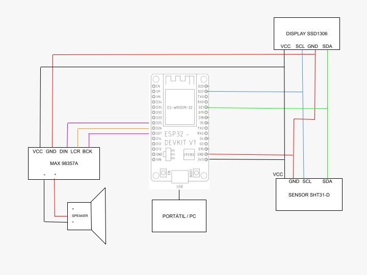
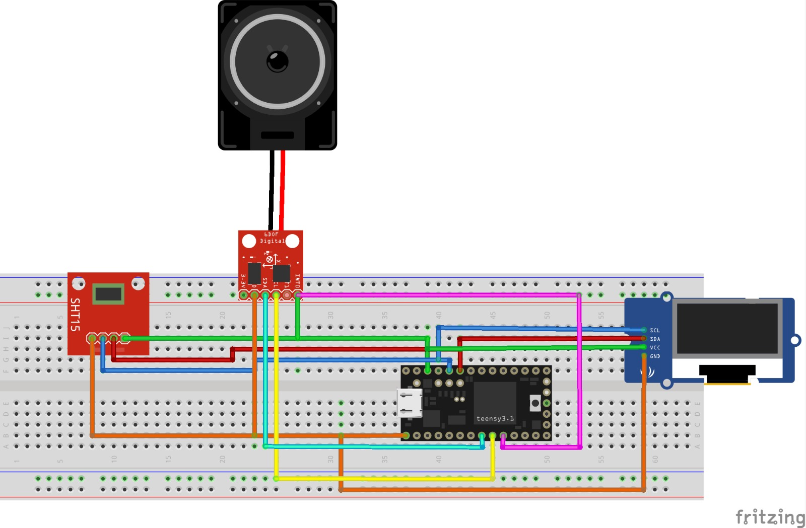

#include <Arduino.h>
#include <NTPClient.h> // Liberia Fecha i Hora Local
#include <WiFiUdp.h> // Liberia Fecha i Hora Local
#include <WiFi.h> // Liberia Fecha i Hora Local
#include "AsyncTCP.h" // Web Server
#include <DNSServer.h> // Web Server
#include "ESPAsyncWebServer.h" // Web Server
#include <Wire.h> // Only needed for Arduino 1.6.5 and earlier
#include "Audio.h" // Libreria Audio ESP32-audioI2S-master
#include "ClosedCube_SHT31D.h" // Liberia Sensor de Temperatura SHT31-D
#include "SSD1306Wire.h" // Liberia Display SSD1306
#define I2S_DOUT 25
#define I2S_BCLK 27
#define I2S_LRC 26
Audio audio;
String ssid = "HUAWEI P30 lite";
String password = "berta056";
DNSServer dnsServer;
AsyncWebServer server(80);
SSD1306Wire display(0x3c, SDA, SCL);
ClosedCube_SHT31D sht31 = ClosedCube_SHT31D();
SHT31D result;
WiFiUDP ntpUDP;
NTPClient timeClient(ntpUDP);
String formattedDate;
float temp;
float humd;
int contAudio=0; int mult=0; int cont=0;
void AudioLoopTask(void *parameter);
void MainTHTask(void *parameter);
void AudioOut();
void OutTerminal();
void OutDisplay();
String readSHT31Temperature(){
float t = result.t;
return String(t);
}
String readSHT31Humidity() {
float h = result.rh;
return String(h);
}
// Pagina WebServer
const char index_html[] PROGMEM = R"rawliteral(
<!DOCTYPE HTML><html>
<head>
<meta name="viewport" content="width=device-width, initial-scale=1">
<link rel="stylesheet" href="https://use.fontawesome.com/releases/v5.7.2/css/all.css" integrity="sha384-fnmOCqbTlWIlj8LyTjo7mOUStjsKC4pOpQbqyi7RrhN7udi9RwhKkMHpvLbHG9Sr" crossorigin="anonymous">
<style>
html {
font-family: Arial;
display: inline-block;
margin: 0px auto;
text-align: center;
}
h2 { font-size: 3.0rem; }
p { font-size: 3.0rem; }
.units { font-size: 1.2rem; }
.sht31-labels{
font-size: 1.5rem;
vertical-align:middle;
padding-bottom: 15px;
}
</style>
</head>
<body>
<h2>INFORME DIARIO DE TEMPERATURA</h2>
<p>
<iframe width="550" height="325" src="https://reloj-alarma.com/embed/#theme=0&m=0&showdate=1" frameborder="0" allowfullscreen>
</iframe>
</p>
<p>
<i class="fas fa-thermometer-half" style="color:#059e8a;"></i>
<span class="sht31-labels">Temperatura</span>
<span id="temperature">%TEMPERATURE%</span>
<sup class="units">°C</sup>
</p>
<p>
<i class="fas fa-tint" style="color:#00add6;"></i>
<span class="sht31-labels">Humedad</span>
<span id="humidity">%HUMIDITY%</span>
<sup class="units">%</sup>
</p>
</body>
<script>
setInterval(function ( ) {
var xhttp = new XMLHttpRequest();
xhttp.onreadystatechange = function() {
if (this.readyState == 4 && this.status == 200) {
document.getElementById("temperature").innerHTML = this.responseText;
}
};
xhttp.open("GET", "/temperature", true);
xhttp.send();
}, 10000 ) ;
setInterval(function ( ) {
var xhttp = new XMLHttpRequest();
xhttp.onreadystatechange = function() {
if (this.readyState == 4 && this.status == 200) {
document.getElementById("humidity").innerHTML = this.responseText;
}
};
xhttp.open("GET", "/humidity", true);
xhttp.send();
}, 10000 ) ;
</script>
</html>)rawliteral";
String processor(const String& var){
if(var == "TEMPERATURE"){ return readSHT31Temperature(); }
else if(var == "HUMIDITY"){ return readSHT31Humidity(); }
return String();
}
void setup() {
Serial.begin(115200);
Wire.begin();
// Initialising the UI will init the display too.
Serial.println(" ");
Serial.println("ClosedCube SHT3X-D Periodic Mode Example");
Serial.println("supports SHT30-D, SHT31-D and SHT35-D");
sht31.begin(0x44); // I2C address: 0x44 or 0x45
Serial.print("Serial #");
Serial.println(sht31.readSerialNumber());
if (sht31.periodicStart(SHT3XD_REPEATABILITY_HIGH, SHT3XD_FREQUENCY_10HZ) != SHT3XD_NO_ERROR{
Serial.println("[ERROR] Cannot start periodic mode");
}
display.init();
display.flipScreenVertically();
display.setFont(ArialMT_Plain_10);
WiFi.disconnect();
WiFi.mode(WIFI_STA);
WiFi.begin(ssid.c_str(), password.c_str());
Serial.print("Conectando...");
Serial.println(ssid);
while (WiFi.status() != WL_CONNECTED) delay(1500);
Serial.println(".");
Serial.println(WiFi.status());
audio.setPinout(I2S_BCLK, I2S_LRC, I2S_DOUT);
audio.setVolume(21); // 0...21
// Print ESP32 Local IP Address
Serial.println(WiFi.localIP());
timeClient.begin();
timeClient.setTimeOffset(7200);
// Route for root / web page
server.on("/", HTTP_GET, [](AsyncWebServerRequest *request){
request->send_P(200, "text/html", index_html, processor);
});
server.on("/temperature", HTTP_GET, [](AsyncWebServerRequest *request){
request->send_P(200, "text/plain", readSHT31Temperature().c_str());
});
server.on("/humidity", HTTP_GET, [](AsyncWebServerRequest *request){
request->send_P(200, "text/plain", readSHT31Humidity().c_str());
});
xTaskCreatePinnedToCore(
AudioLoopTask, /* Task function. */
"AudioLoopTask", /* name of task. */
10000, /* Stack size of task */
NULL, /* parameter of the task */
1, /* priority of the task */
NULL,
0); /* Task handle to keep track of created task */
xTaskCreatePinnedToCore(
MainTHTask, /* Task function. */
"MainTHTask", /* name of task. */
10000, /* Stack size of task */
NULL, /* parameter of the task */
1, /* priority of the task */
NULL,
1); /* Task handle to keep track of created task */
// Start server
Serial.println("Server begin");
server.begin();
Serial.println("End server");
}
void loop(){
delay(1000);
}
void AudioLoopTask(void * parameter ){
/* loop forever */
Serial.println("this is another TaskLoopAudio");
for(;;){
audio.loop();
delay(1);
}
/* delete a task when finish,
this will never happen because this is infinity loop */
vTaskDelete( NULL );
}
void MainTHTask(void * parameter ){
/* loop forever */
Serial.println("this is another TaskLoopTH");
for(;;){
result = sht31.periodicFetchData();
while(!timeClient.update()) { timeClient.forceUpdate(); }
delay(100);
// The formattedDate comes with the following format:
// 16:00:13 28-05-2018
// We need to extract date and time
formattedDate = timeClient.getFormattedTime();
//Serial.println(formattedDate);
SHT31D result = sht31.periodicFetchData();
humd = result.rh;
temp = result.t;
delay(300);
OutTerminal();
Serial.println();
OutDisplay();
delay(700);
Serial.print("Analisis de temperatura número: ");
Serial.print(contAudio);
Serial.println();
if(contAudio == mult){
mult = mult+25;
AudioOut();
}
contAudio++;
}
/* delete a task when finish,
this will never happen because this is infinity loop */
vTaskDelete( NULL );
}
void OutTerminal(){
Serial.print("-------------------------------------\n");
Serial.print("Informe de la Temperatura y la humedad\n");
Serial.print("\nDATA & HORA LOCAL GMT +2\n");
Serial.println(timeClient.getFormattedDate());
Serial.print("Temperatura:");
Serial.print(temp,1);
Serial.print("ºC\n");
Serial.print("Humedad:");
Serial.print(humd,1);
Serial.print("%\n");
Serial.print("-------------------------------------");
Serial.println();
delay(1);
}
void OutDisplay(){
// Esborra la pantalla
display.clear();
display.setTextAlignment(TEXT_ALIGN_CENTER);
display.setFont(ArialMT_Plain_10);
display.drawString(60,0,"INFORME DIARIO");
display.setFont(ArialMT_Plain_10);
display.drawString(60,10, "TEMPERATURA : " + String(temp) +"ºC");
display.setFont(ArialMT_Plain_16);
display.setFont(ArialMT_Plain_10);
display.drawString(60, 20, "HUMEDAD : " + String(humd) +"%");
display.setFont(ArialMT_Plain_16);
display.drawHorizontalLine(0,32,128);
display.setFont(ArialMT_Plain_10);
display.drawString(60,34,"D/H LOCAL GMT +2");
display.setFont(ArialMT_Plain_10);
display.drawString(60,44,String(timeClient.getFormattedDate()));
display.setFont(ArialMT_Plain_10);
display.drawString(60,54,"IP:"+ WiFi.localIP().toString());
// Escrivim el buffer a la pantalla
display.display();
}
void AudioOut(){
char buffer[150];
if(cont!=0){
audio.stopSong();
}
sprintf(buffer,"la temperatura ambiental es de %s grados centígrados y la humedad es de %s por ciento",String(temp),String(humd));
Serial.println(buffer);
audio.connecttospeech(buffer,"es");
delay(10000);
if(temp > 25.00){
delay(1000);
audio.connecttospeech("Hace mucho calor. Le recomendamos encender el aire acondicionado","es");
delay(5000);
}
else if(temp < 15.00){
delay(1000);
audio.connecttospeech("Hace mucho frío. Le recomendamos encender la calefacción","es");
delay(5000);
}
cont++;
}